Chapter 2: Overview

O v e r v i e w
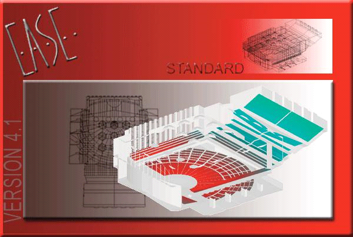
21
EASE 4.3 User’s Guide & Tutorial

Overview
The purpose of this manual is to provide you a working knowledge of the program and its many features and capabilities. This section is intended to help you become acquainted with the program. The tutorial sections that follow will lead you through most of the important EASE features, including room modeling and the acoustic simulation processes.
NOTE: Please don't skip any part of the tutorial. The time you spend working on the various exercises in the tutorial will save you hours and hours of time later on. Even after you complete the tutorial you will find it helpful to refer back to it from time-to-time. It contains a wealth of helpful hints and shortcuts. If you don't have time now to do all the tutorial exercises, at least scan through the tutorial to become acquainted with all the features of EASE. Then, use the manual as a reference guide when you need guidance in how to accomplish specific tasks.
*If you are using EASE JR, substitute EASE JR for EASE as you read this tutorial
General Information
EASE is actually a number of separate,individual programs or program modules, some of which are stand alone programs linked together. The EASE Main program is the Parent program from which all the other programs (child programs) emanate. During use only the pro-gram(s) needed to perform the required task(s) need to be running. As a general rule, the various programs open automatically when they are needed to perform a task, but must be manually closed.
Stand Alone modules can be run separately without the need to run the main program; for example, the Speaker Base program can be run to create or analyze a cluster not associated with a specific opened project.
This technique provides a great deal of flexibility, but it also requires that data be exchanged between the various program modules. Op-tion settings give you control over how the exchange takes place (automatically or manually). The usual setting has the data exchange taking place automatically when the modules are opened or closed (accompanied by a Prompt if you desire one). However, even when the option settings call for automatic exchange, there are times the exchange may have to be initiated manually. You'll encounter examples of this as you work your way through the tutorial.
A list of all the program modules and block diagram showing the primary program module structure can be found in the Appendix at the end of this manual. You may want to take a few minutes to study the block diagram as an understanding of the relationship between mod-ules is helpful in understanding the program.
Key Commands
With EASE you will be using both key commands and a mouse, especially while modeling a room. Key commands are helpful as they speed up many of the processes and you should make a point of learning them as you work with the program. This is especially true if you will be using the program regularly. You’ll be surprised how much faster modeling goes once you start using the key commands.
A few of the key commands you will want to memorize follow. Notice that the key commands vary from module to module.
Under the Main Menu
Ctrl + s Save Project
Ctrl + a Save As
General
F1
Opens the Help file
F9
Opens the Options folder
F11
Zoom in
F12
Zoom out
HOME
Returns screen to "full" view
3
Changes to the 3D view
x
Changes to the X (side) view and while in Edit Project the YZ grid
y
Changes to the Y (end) view and while in Edit Project the XZ grid
z
Changes to the Z (top) view and while in Edit Project the XY grid.
22
Chapter 2: Overview

p Changes Mouse mode to Pick
d Changes Mouse mode to Drag
t Changes Mouse mode to Turn & Zoom (use the left mouse button to
turn model, right button to zoom in and out)
Shift + c Changes Mouse mode to Center (Spot)
Under Edit Project
a Insert Audience Area.
c Insert Listener Chair
e Insert Edge
f Insert Face
l Insert Loudspeaker
v Insert Vertex
F2 Opens the Change Wall material folder for the selected Face (s)
F3 Selects and highlights all Faces having the same material as the originally selected Face
F4 Opens the Mouse Menu on the selected item which lists all the options available for that item. (performs
same function as the right mouse button)
F5 Checks Data
F6 Applies Project Data and Saves
F8 Deactivates all Active items
Ctrl + F Opens the Find Item screen
Ctrl + F2 Opens the Change Color window
Ctrl + F3 Changes the Wall material of all selected Faces
Ctrl + F12 Deletes all stacked Vertices
Shift + F2 Changes the Rear material of two-fold Faces
Shift + Ctrl + F2 Changes the color of the Rear material on two-fold Faces
Shift + F3 Selects and highlights all Rear material Faces having the same material
as the originally selected Rear material Face
Shift + Ctrl + F3 Changes the Wall material of all selected Rear material Faces
Shift + x Changes to the X (side) view and YZ grid and opens the Options/Editing
folder to allow editing of the plane value
Shift + y Changes to the Y (end) view and XZ grid and opens the Options/Editing
folder to allow editing of the plane value
Shift + z Changes to the Z (top) view and XY grid and open the Options/Editing
folder to allow editing of the plane value
Shift + Ctrl + F12 Deletes all unattached Vertices
Shift + Down Arrow Moves selected item 1 step in the - Y direction
Shift + Up Arrow Moves selected item 1 step in the + Y direction
Shift + Right Arrow Moves selected item 1 step in the - X direction
Shift + Left Arrow Moves selected item 1 step in the + X direction.
You will also be using both the right and the left mouse buttons and the mouse wheel. In general, the left mouse button is used to Pick or select an item, while the right mouse button will open the Mouse Menu for the item selected. The Mouse Menu is a pop up menu listing all the options that can be performed on the selected item. The mouse wheel is used to Zoom In and Zoom Out.
More complete listings of the key commands used in EASE 4.3 can be found in the Help File.
23
EASE 4.3 User’s Guide & Tutorial

Help Files
Key command F1 opens the EASE 4.3 Help files giving you instant access to the extensive EASE Help files.
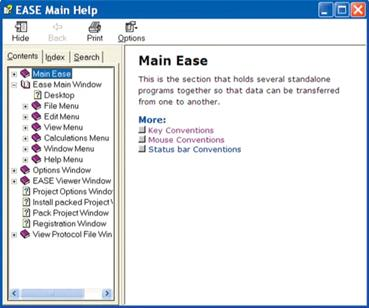
Its easy to use and we suggest you spend a few minutes becoming acquainted with it and its contents.
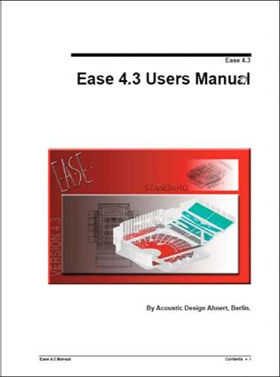
EASE 4.3 Manual
The EASE 4.3 Manual is essentially a PDF version of the EASE Help files. It was loaded onto your computer along with the program and stored in the EASE 4.3 Manual folder under EASE 4.3/Easepath in your computers Program Files directory.
Take a look at it. You may want to print it and use it as a handy refer-ence manual. It contains a wealth of idetailed information on the pro-gram, including an Appendix that describes and details the Acoustic Formulae used in EASE and a detailed list of all the key commands.
24
Chapter 2: Overview

Starting EASE
From the Windows Start menu, choose All Programs and then select EASE or double click on the EASE 4.3 icon placed on your desktop by the installation program.
Note that if this is the first time you have opened EASE, a screen prompt will ask for your name. Add it and then click OK. Then the Main Menu screen shown below will open.

EASE 4.3 offers you three different ways to take the next step. You can open the File pull down menu, use the Tool Bar Icons at the top of the window or use the Desktop Icons to make your selection,. The choice is yours, use the method that works best for you.
Notice that placing the cursor over any one of the Tool Bar icons or Desktop icons brings up a description of that icon’s function. This is a standard feature of the user friendly GUI of EASE 4.3.
You may also have noticed that the Edit and View pull down menus in the Menu Bar are not active. They will be activated as soon as a project is selected and read into RAM..
25
EASE 4.3 User’s Guide & Tutorial

One of the features of EASE 4.3 is the ability to build your own Desktop with shortcuts to the functions you most often use. To see how this works, double-click on the Start Working icon, then double-click on the Desktop icon. This will open the screen shown below.
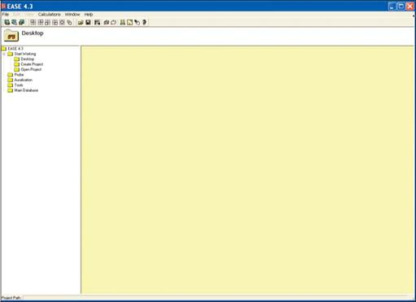
Note that the yellow Desktop section is blank. You can easily add shortcuts to the Desktop by selecting them with the right Mouse button and then left clicking on the Add Link to Desktop prompt that appears. Desktop shortcuts can just as easily be removed by right clicking on them and then left clicking on the Remove Link to Desktop prompt.
You’ll find the ability to build your own Desktop a useful feature after you have become familiar with the program ant the functions you use again and again.
Now, let’s move on and set up the basic operating parameters for EASE. We’ll use the File pull down menu. Selecting the File pull down menu opens the menu shown to the right.
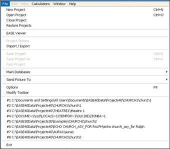
This menu or the Desk Top Icons will probably be the starting point for most of your EASE sessions since it provides access to your various Project files, to the Import/Export module, to the Main Databases and to the Options folder.
The File menu also includes a Pack Project command. This com-mand is used to gather all the individual files associated with a particular project into a single file that can be easily Zipped and copied onto a disk for storage or backup, or e-mailed around the world. We’ll work with Pack Projects later.
Note that it also provides shortcuts to projects you have recently viewed or worked with. These shortcuts appear as #1 to #8 in the graphic shown here. Double clicking on one of the shortcuts will open the associated project.
Your screen will not list any projects unless you opened one or two projects before starting the Tutorial.
26
Chapter 2: Overview

The Options command provides access to the program's primary set up menus. Clicking on Options will open a typical Windows Option folder. Let’s take a look at several of the tabs (folders).
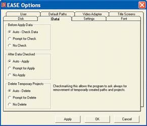
The Data tab folder controls the manner in which data is exchanged (up-loaded and downloaded) between the program modules. Refer back to page 2x for details. Note that placing the cursor over one of the Options produces a brief explanation of the Options function. We suggest you ac-cept the default “Auto” settings.
Note that EASE will warn you if you attempt to run a simulation without hav-ing properly exchanged data between modules. For example, if after open-ing one of the Mapping or other post processing modules you make a change in the model under Edit Project, EASE will warn you a change has been made before it permits you to run a new simulation. The warning takes the form of a yellow frame around the simulation screen if the changed proj-ect data was checked, but not acquired by the simulation module. If the data wasn’t checked, the frame is red. The Acquire Data icon in the Tool Bar section, Ctrl O or the File menu option Acquire Project Data will download the new data if it is Checked.
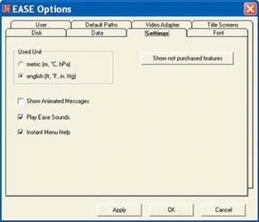
EASE automatically creates a Temporary Project file whenever you open the Edit Project program module. When Auto-Apply is checked, the Tempo-rary Projects file is updated whenever you Check Data. One of its purposes is to protect you against losing a lot of work, if you inadvertently close the Edit Project program without having saved your work.
The Delete Temporary Projects section of the Data window allows you to control whether this file is automatically deleted whenever you exit the pro-gram or is automatically saved, or whether you are given the opportunity to decide on an individual basis. This feature does not protect against com-puter crashes, unless you have saved (applied) your work as you pro-ceeded. Your best protection against crashes is to routinely and regularly Apply and Save your changes by using the Ctrl + F6 key command.
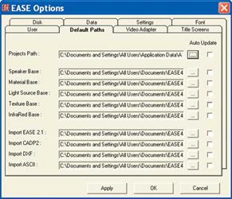
The Setting tab allows you to select Metric (m) or English (Ft.) as the De-fault measurement system. The default setting is Metric, so change it to English (Ft.) if most of your work will be done in feet. You also have the op-portunity to change the way the program looks (Play Animated Messages) and sounds (Play EASE Sounds). We recommend the default settings, but you may want to try out the Animated Messages.
The Default Paths tab shows you the various default paths the program has established and gives you the opportunity to change them. We strongly suggest leaving them as they are unless you have a good reason to change them. The Default Paths shown reflect the Microsoft recommended path structure used in Vista installations. If you are an XP user, the path structure will probably be C:\Ease40Data\.
The Video Adapter tab provides a means of quickly checking your Video Drivers ability to handle Open GL renderings. The Run Check but-ton will look for your system’s Video Driver and then display its parameters in the left field. Load Database produces a listing of Video Driv-ers whose Open GL performance has been checked by ADA. The Font tab give you the opportunity to change the type of Font used by the program and its size.
The User tab provides a location for you to register your name and enter (store) your User ID number. All users should enter their name and User ID number before proceeding.
27
EASE 4.3 User’s Guide & Tutorial

A Brief Tour
Before we begin to model a new room, lets take a short walk through the program. Warning, if before starting the Tutorial you explored the program and changed some of the settings, you may not see the exact screens shown in the Tutorial. If you experience graphic problems or Open GL warnings during the tour, the chances are you have a video driver problem.
Opening a Project
EASE offers you three ways to open a Project; Open Project under the File pull down menu, the Open Project icon (the file folder icon) in the Tool Bar or the Start Working icon on the Desk Top.
Either method will take you to the Projects40 Folder where you can select the desired project. We want to review the Theater1_09 project. It should be stored in the EASE40Data/Projects40/ Theater 1 folder on your C: Drive. We’ll use the Open Project icon in the Tool Bar to open the project.
Note: If during installation you elected to store the EASE40 Data on another drive, it will be located there instead of on the C: Drive. Vista users will find the Projects40 folder under C;\documents and Settings\All Users\Shared Documents\EASE40 Data.
Click on the icon, then select Theater 1 and Theater 1_09.frd. This will bring up (upload) the Theater1_09 files and introduce a Prompt ad-vising you that the Loading is complete and asking if you want to “Draw Room”. Answering Yes will open the Edit Project window. For now,
click on .
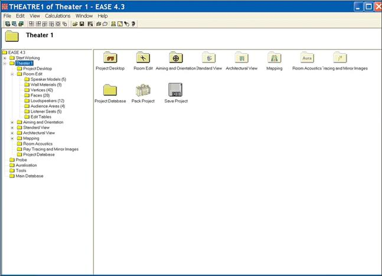
28
Chapter 2: Overview

Project Data Files
The tree in the left panel represents a quick way to review the data files associated with the project and then, if you want, print a hard copy for your files. Selecting Loudspeakers, for example, produces in the right panel a listing of all the loudspeakers used in the project, com-plete with their locations and their aiming angles.
Selecting Send Picture To from the File pull down menu will give you the choice of sending the window to the Clipboard, to File in a number of different file formats, or to the EasePage Designer. The EasePage Designer allows you to customize the graphic by adding notes and then either save or print the graphic.
Saving the window to the Clipboard allows you to copy the window into another program such as Word, customize it and then file it away or print it.
No matter how you save it, you end up with a hard copy list of the Loudspeakers being used in the project and their location that you can turn over to your installation crew. It takes all the guesswork out of where to hang the loudspeakers and how to aim them.
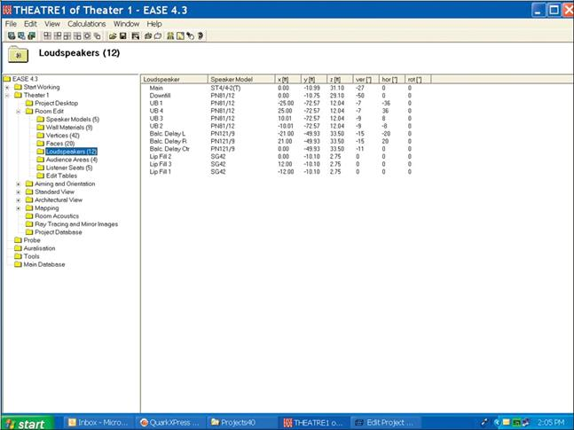
Now it’s time to open the Edit Project Data window where most of the modeling takes place.
Either select the Edit Project Data icon in the tool bar or click on Project Data under the Edit pull down menu.
29
EASE 4.3 User’s Guide & Tutorial
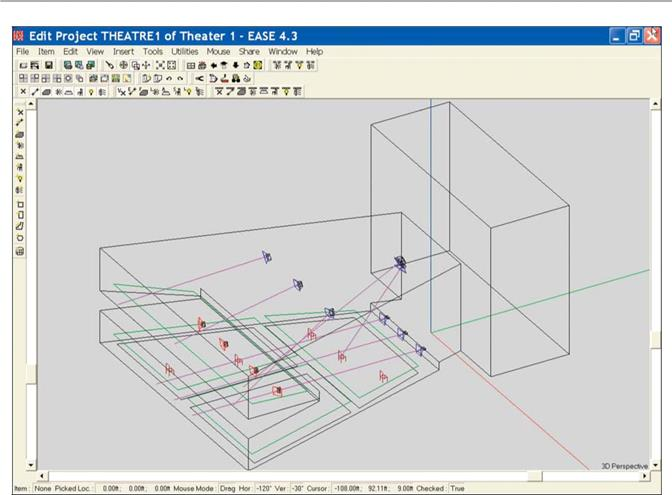
Note the intersecting red, green and blue lines. They mark the 0, 0, 0 point of the model and the x, y and z axis to help you keep your ori-entation while viewing the model from different angles. Green is the + y axis, Red the + x axis and Blue the + z axis.
The blue icons represent loudspeakers.
The purple lines show the loudspeaker aiming points and can be easily turned off.
The areas outlined in green are the Audience Areas upon which most of the performance mapping will take place.
The red chairs are Listener Seats that have been placed in the model for use in detailed electro-acoustic simulations.
As you can see, the top portion of the Edit Project screen is devoted to the Main menu bar and a number of Tool Bars. The left side of the screen has two Tool Bars, the ones most often used in constructing a model. These Tool Bars place within easy reach the most frequently used tools needed to Edit (construct or change) a model. Don't worry about having to memorize their use; dragging the cursor over any tool brings up its description. Try it, it works.
The status bar at the bottom of the screen gives you the identity and location of any item you have selected (picked) and other useful sta-tus information.
It should be noted here that many of the Tool Bar commands can also be initiated with Key commands. If you know the Key commands, it’s usually easier and faster to use them. Most, if not all of the commands can also be accessed by using the pull down menus in the Main menu bar. The Tool Bars can be moved to any spot on the screen by grabbing the Move bar on their left side and dragging them to a new location. They can also be deleted and then restored at a later time using the Modify Toolbar command under the File pull down menu.
The scroll bars on the sides and bottom of the screen allow you to turn, rotate and resize the room drawing. They make it easy to view the room from any angle, a very important feature. Try out the scroll bars. Its fun, and you need to become familiar with them.
30
Chapter 2: Overview

Note that the model turns or rotates around the center of the image. You can change this by using the cursor and left mouse button to se-lect a point on the model. The model will then rotate or turn around that point. It should be noted that the model itself does not rotate or turn. What is actually rotated or turned is your point of view of the model. By moving the scroll bars, you are virtually moving yourself around the model for better viewing.
Another way to turn and rotate the room is the Turn icon in the Tool Bars. Use the left Mouse button and cursor to turn the drawing and the right Mouse button to zoom in and out on the drawing.
The F11 and F12 key commands also allow you to Zoom In and Zoom Out at will. You can also shrink and expand the drawing using the scroll wheel on your mouse. And, last but not least, the Zoom In icon in the tool bar section allows you to draw a box around any part of the drawing and zoom in on it.
When you want to return to the normal isometric view click on either the 3D Perspective icon or the Full icon in the Tool Bars.
Terminology
To help you understand some of the tools and their use, a brief description of EASE parameters and terminology follows. The key words are highlighted in bold type.
In EASE Rooms are constructed from Faces formed by joining 3 or more Vertices together to define the boundaries (margins) of the Face. A Face can have from 3 to an unlimited number of Vertices.
Rooms can be Open or Closed. A Closed Room is one whose Faces completely surround (enclose) the Room. EASE needs a Closed Room before it can calculate the total surface area and room volume figures needed for many of its simulations.
Faces normally have only 1 side of interest to the simulations (the reflective side) and it must be properly oriented (having the reflective surface facing into the Room) in order for the Room to be closed, e.g. have boundary walls. Two-Fold Faces have two sides that are of interest to the simulations. They are used to add barriers and reflective/absorptive panels into the room as well as to paste (Coat) one Face on top of another.
Audience Areas are imaginary planes above a room surface, usually the floor, onto which EASE maps many of its acoustical simulations.
They are traditionally placed 1.2 m (3.94 feet) above the floor or at approximately the same height as the ears of seated listeners.
Note: Seating Areas are different than Audience Areas. They are areas modeled into the room, usually by pasting (Coating) a Two-Fold Face on top of a floor Face. They make it easy to change the Room’s acoustical properties to reflect various size audiences by placing materials having absorption characteristics similar to those of an audience on the exposed side of the Two-Fold Face.
Listener Seats are specific locations (points) within the Room. They are identified by a chair symbol.
Objects are items that have been grouped together to form a single item (an Object) that can be duplicated, saved or moved as a single item. Objects can be created from items of different types; for example from Faces, Loudspeakers and Audience Areas.
When you were practicing with the scroll bars, you may have noticed that when you picked a spot on one of the Faces, its border changed
from black to either white or yellow. This is the program’s way of displaying the orientation of that Face. A white outline on a picked Face means that you are looking at the outside (the non exposed side) of that Face. Yellow means you are looking at the inside of that Face (the reflective side), the side that should be facing into the room. Learn this. It’s a crucial point.
Other traditional EASE color assignments are:
The backgroung color is light gray
Vertices are shown in red
Faces are outlined in black until they are selected.
Lamps are yellow.
Other color assignments are possible to suit individual needs or preferences.
31
EASE 4.3 User’s Guide & Tutorial

Viewing a Project
Now, let's continue our exploration of EASE. Return to the Main window by clicking on it (you may have to first shrink or mininize the Edit Project window) and select the View pull down menu and choose Standard Rendering. Choosing Architectural Rendering would have opened the Vision program module. We’ll explore Vision in detail in another section of this manual.
Selecting Standard Rendering opens a new program called Eyes. Note that the Edit Project program remains active. The choice of whether to leave the Edit Project program open or to close it is yours.
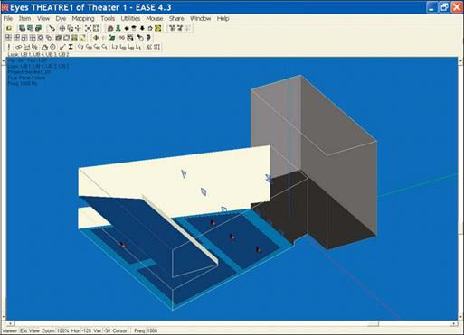
The Eyes program module provides a number of different eye-catching and illuminating ways of looking at the room. Notice that all of the walls are solid, except for the ones the program removed to allow you to look into the room. Note that the isometric view may not be the same isometric view you were seeing in the Room Editor. If it isn’t, use the 3-D icon in the Tool Bars to change its orientation. Each click on the icon will turn the view by 90 degrees around the z-Axis.
Next, go to the Item pull down menu and turn off Outline all Faces. See below.
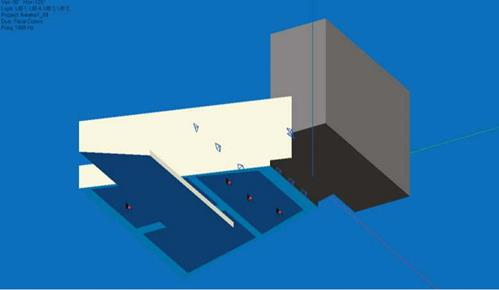
32
Chapter 2: Overview

Some users prefer this view, while others prefer to have all the Faces outlined as they feel it helps them better visualize the room. Its your choice. Try selecting Colored Outlines, too. You may like this look even better. Go to the View pull down menu in the Eyes menu bar and turn off Solid Rendering by clicking on it to produce another room graphic. Then turn Solid Rendering back On.
The Audience Areas were probably turned off when you opened Eyes. Turn them On by going to the Items pull down menu and checking Audience Areas.
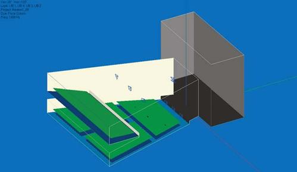
Note that under the Items menu, you can also turn “Off” the Listener Seat and the Loudspeaker symbols.
You also have a choice of showing the Loudspeakers as symbols or as Case (wireframe) drawings. To make your choice, right click on the screen to open the Options Folder, select the Items tab and make your choice. It should be noted that Case drawings for the loudspeakers being used must be available in EASE before the program can display them. If they aren’t available, you can create your own Case draw-ings for ones that are missing. We’ll tell you how later.
The color of the room surfaces (Face colors) was established in Edit Project Data while the model was being built. Using Face colors is only one of many ways to color the graphic. Go to the Dye pull down menu to try out the various ways, especially the Material Alpha, Alpha Spectrum and Random Color options.
The Material Alpha view allows you to look at the surfaces based on their absorption characteristics at a specific frequency. The Alpha Spectrum view paints the surfaces based on their average absorption over the entire frequency range. Random Color paints each surface a different color and makes it easy to distinguish one surface from another.
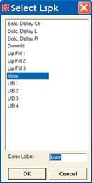
So far, we have looked at the room from an external point of view. There are also several ways to look at the room from the inside the room..
Selecting the Look From Loudspeaker icon in the Tool Bars (the default position is in the right sec-tion of the top row of Tool Bars) will open a selection menu giving you the opportunity to choose the Loudspeaker you want to use to look at the room.
Selecting one (Main, for example) will produce an inside view of the Room from that loudspeaker’s view point. See next page.
33
EASE 4.3 User’s Guide & Tutorial
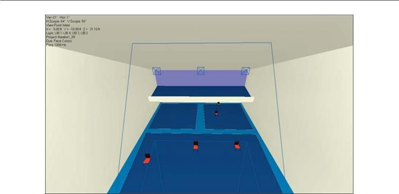
You can also look at the room from any icon of the Listeners Seats by clicking on the Look from Listener Seat icon and then selecting one of the Listener Seats from the selection window that opens.
Notice that in all these views you can also manipulate (turn and rotate) the view to look at different parts of the room.
Using the Walker
No tour of an actual room would be complete without walking around the room and EASE allows you to do just that with the Walker. All you need to do is click on the Walker icon
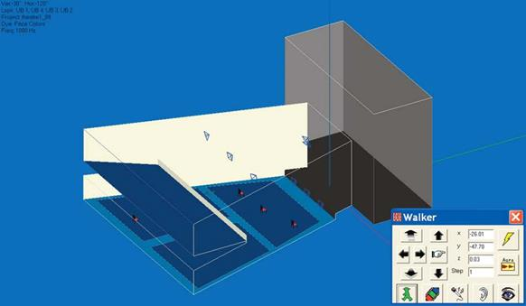
If the Walker window is obscuring the graphics, use your mouse to move it. Notice that a small x, y, z icon has been added to the room graphic. It shows you the location of the Walker. You can change the location, by changing the coordinate information in the dialog win-dow or by using the mouse cursor to grab the x, y, z icon and physically move it.
34
Chapter 2: Overview

If you decide to physically move it, you first will have change the operating mode of the Mouse. Use key command “p” to switch to the Pick mode or the Mouse pull down menu. Then you will be able to grab the x, y, z icon and move it to any location you want.
Note that if you were going step by step through the Tutorial, the Walker was probably placed at the insertion point of the Main loud-speaker, the last location selected in the Eyes program. You may have to Zoom In on the Main loudspeaker to see it as the icon is quite small. A way to avoid this is to use the cursor to Pick the spot where you want to insert the Walker. The Walker will automatically open at that spot.
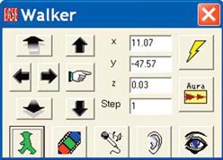
The arrow buttons in the Walker control panel above and below the Go To button (the pointing finger icon) allow you to move up and down. The other 4 buttons allow you to move to the right or left and forward or backward in the room; use the scroll bar on the bottom of the screen to turn your head and the right scroll bar to look up or down.
To view the room from the Walker location, click on the Eye icon. It toggles between the Walker (Orthographic and Perspective) viewpoints. If all you see is a blank wall, it's probably because your head is turned and you are looking at the rear of the room instead of the front. Use the bottom scroll bar to turn your head until you can see the front of the room. Take a walk around, you'll enjoy it.
Note: Even if you do not have EARS, you can also initiate a direct sound auralization by clicking on the Ear icon. This is true for both EASE and EASE JR. If you have EASE, you can also activate the Acoustical Probe from the Walker control menu by clicking on the Microphone icon. EASE users can by pressing the Lightning symbol button, also initiate a Ray Tracing Impact study at the Walker location. For users having AURA, the Aura button opens AURA for a monaural Impulse response study at the Walker position.
Electro-Acoustic Calculations (Room Mapping)
The last stop on our quick overview of EASE will be the Electro-Acoustic Simulation or Mapping portion of the program. EASE and EASE JR offer two basic methods of displaying (mapping) the electro-acoustic performance of the model and its loudspeaker system; Area Map-ping and Room Mapping.
Room Mapping is accessible from either the Eyes rendering module or from the Main window by selecting Room Mapping from the Calcu-lations pull down menu. Since we are already in the Eyes module, we’ll start there. The bottom row of Tool Bars in the Eyes window pro-vide direct access to the mapping functions. First, use your mouse and the cursor to find the Direct SPL button and then click on it. This will initiate the mapping routine by bringing up the following setup window.
All EASE simulations are based upon a number of setup parameters. For example, the program needs to know what loudspeakers will be used and at what frequency the simulation should be run. The Mapping setup window and the two that follow take you step by step through the points that need to be considered. We’ll review all of the setup parameters in detail later on in this tutorial. For now, since we are just taking a quick tour we’ll accept most of the default settings.

The only change we need to make in this window is to select the Loudspeakers we want to use. Clicking on the Lspk button will bring up a selection menu. Select Main and OK. We’ll use only the Main loudspeaker in our example. If we wanted to use all the loud-speakers, right clicking on OK in the selection window would have selected all of them.
Note that All Mappings is checked. When All Mappings is turned on, the program will gather all the information it needs to map all measures at all frequencies. When Single is checked, information for only the selected measure at the chosen frequency is gathered. It takes only slightly longer for All Mappings than for a Single map, so most users automatically use All Mappings all the time.
35
EASE 4.3 User’s Guide & Tutorial

Now press Next to open the second (Items) setup window.
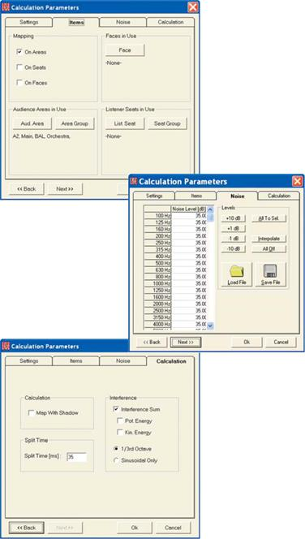
The Items setup window is where the room elements that will be used in the simulation are selected.
For our first simulation we want to map on all the Au-dience Areas, so no changes are necessary in this window. All we need to do is to make sure On Areas is checked in the Mapping section and all the Audi-ence Areas are selected under Audience Areas In Use. Pressing the Audience Area button will bring up a listing of all the Audience Areas included in the model. All you need to do is to select all of them if they aren’t already selected.
Note: If you turned Off the Audience Areas in the previous room rendering exercise, you will need to go to the Items pull down menu and turn them back On. EASE will not map on Audience Areas that are turned Off.
Press Next to advance to the Noise setup window, which allows you to set the noise levels used in the intelligibility simulations. For now, accept the default settings. We’ll cover this EASE feature in detail in the Room Investigations section of this manual.
Press Next to advance to the Calculation setup win-dow where the nature of the simulation is defined. Note that you have the opportunity to map either with or without Shadowing and with either a Sinus (single frequency) signal or in third octave bands.
Make sure Map With Shadows is selected. We want to see how much of the main floor Audience Areas under the balcony is shadowed from the Main Speaker by the balcony.
We’ll stick with the other settings for now. Click on OK to start the simulation.
When the simulation is complete the program will map the results on the Audience Areas and open a View Calculation window. Note that the View Calcu-lation window blocks the main screen making it im-possible to see the Audience Areas.
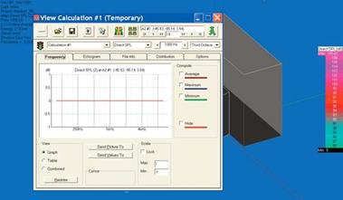
Minimize it by clicking on the Minimize Icon in the left corner of the View Calculation window and then use your Mouse to drag it to a location which allows you to see the mapping.
We’ll come back to the purpose of the Calculation window when we get to the Room Investigations section of the manual.
36
Chapter 2: Overview

As you can see, the results of the simulation have been “mapped” on the Audience Areas. The black section at the rear of the under balcony area defines the area being shadowed from the main cluster by the balcony. The jagged front edge of this area is a sign we maybe should have used a higher resolution in this simulation. When “Patches” are used, EASE scans the area patch by patch and had difficulty cal-culating these patches since part of the patch was being shadowed and part wasn’t.
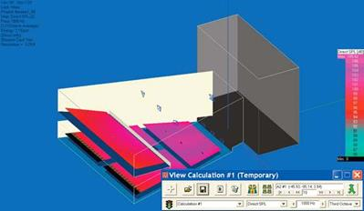
Now, let’s look at the Intelligibility. Since we used All Mappings, all we have to do is go to minimized Calcu-lations window and use the drop down arrow to change Direct SPL to Articulation Loss (Alcons) and then press the bright colored Render Map icon. The Alcons map will appear almost instantly; all EASE had to do was to render the map, it had already done the calculations.
Notice the shadowed area under the balcony is red while everything else is light green. In Alcons, light green is good while red indicates the program was unable to calculate the articulation loss because of the shadow.
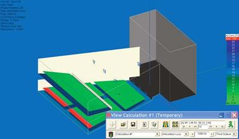
Now let’s try mapping on the Room surfaces. First, go to the menu bar, select Items and turn off the Audi-ence Areas. Then press the Waste Basket icon in the View Calculation window to waste the existing calcu-lation file and start a new calculation by pressing on the Direct SPL icon. leave the first setup window un-changed. In the second one, turn off On Areas and check On Faces. Next go to the Faces In Use sec-tion, press the Faces button and select all the Faces. Note that you have the option of choosing only a few of the Faces if that is what you want. OK the setup and run the simulation.
Notice that the black area at the rear of the under bal-cony area has disappeared and now there is one at the front of the balcony. The floor at the rear of the under balcony area is not shadowed, even though the ears of anyone seated there would be. In a similar fashion, listeners seated in the front row of the bal-cony would not be shadowed by the face of the bal-cony even though the floor under them would be.
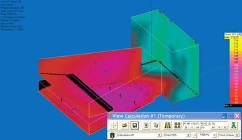
Use the scroll bars and other viewing tools to turn and rotate the room. Note the hot spot on the ceiling di-rectly over the cluster.
Note that EASE JR users will only be able to map Di-rect SPL in Room Mapping. EASE users can map all the other simulations in Room Mapping, but EASE JR users can’t.
37
EASE 4.3 User’s Guide & Tutorial

Area Mapping
Area Mapping (it’s also called Standard Mapping) porvides the same electro-acoustic measures as Room Mapping, eccept it displays them only on the Audience Areas. The Direct SPL map shown below is identical to the one we viewed in Room Mapping presented in a different fashion.
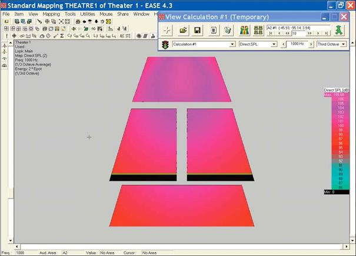
One advantage of Area Mapping is that the Audience Areas can be moved around to eliminate one Audience Area from partially overlap-ping or completely blocking your view of another Audience Area. In this graphic, for example, the Balcony Audience Area (the Audience Area at the bottom of the screen) has been moved so it does not overlap any portion of the two main floor Audience Areas.
Moving the Audience Areas is accomplished in the Edit Project module. To see how it works, go back to the Edit Project window and select Area Layout from the Edit pull down menu. Then select Move from the Edit pull down menu and move the Audience Areas around by grab-bing them with the pliers tool. It’s easy to do.
Without the normal 3D view it’s easy to lose track of which Audience Area is which. To prevent this most users give them a name when they are created and turn on the Audience Area Labels when they are using Area Mapping. Use your cursor to find the Audience Areas Label icon in the tool bar section and turn the labels On.
While running these simulations you may have noticed that there have been colors in some of the renderings that did not appear in the Color Legend chart at the side of the screen. The reason is that the Color Legend chart has a range of only 20 dB while the range of the display is much greater. If this presents a problem for you, go to the View tab in the Options menu (right click on the screen and select Op-tions or hit F9 and then select the View tab). Check Auto Show Legends Window and hit Apply to insert a color legend with a scroll bar that enables you to identify all the colors. If you want to use this one instead of the one with a limited range, uncheck Auto Show Legends and leave Auto Show Legends Window selected. Then click on OK. Note that this same folder gives you control of the Parameters usually shown in the upper left corner of the screen.
38
Chapter 2: Overview

Be aware that if you turn off these item’s auto insert commands in the Option folder you can still manually insert them by going to the Utili-ties pull down menu and clicking on the appropriate command.
Let’s do one more simulation before we move on to building a model. This time let’s take a close look at the balcony coverage being pro-vided by the three Delay loudspeakers.
Click on the Recalculate Map icon (it’s the explanation point symbol at the left end of the lower tool bar section) to initiate a new calcula-tion. In the opening setup window you’ll need to change from the Main Loudspeaker to the three Delay loudspeakers. Click on one of the Delay loudspeakers and then hold down the Ctrl key while you select the other two. Press Next. In the second setup window you will need to turn Off all the Audience Areas except for the Balcony Audience Area. Make the change and hit OK to start the simulation.
The resultant Map may be a little difficult to interpret, so lets try mapping in Isolines instead of by by Patches. Find the Isolines Icon in the tool bar section (it’s just to the right of the STI icon) and click on it. EASE will then redraw the Map in Isolines which may be a little easier to read. The Isoline Map is shown below.
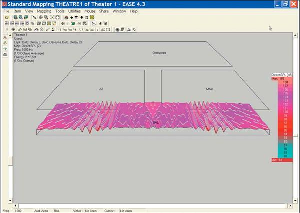
Notice the interference pattern between the three delay line loudspeakers. Investigate it by turning and rotating the graphic to get a better view.
If you have time, rerun the simulation using Sinus and one-octave signals and note the differences. Try other combinations, too, to get a feel for this portion of the program.
39